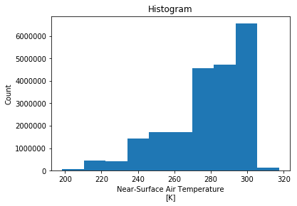
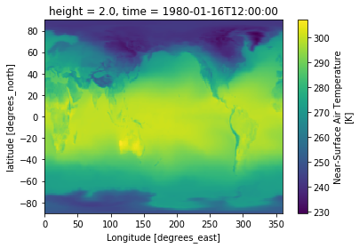
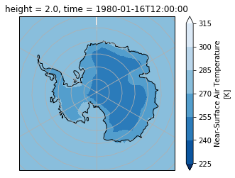

For this notebook to work you will need to install:
import baspy as bp
import matplotlib.pyplot as plt
import cartopy.crs as ccrs
import xarray as xr
%matplotlib inline Using BASpy
Define the CMIP5 data we want to work with
catlg = bp.catalogue(dataset='cmip5', Experiment='historical',
Frequency='mon', Var='tas',
Model='HadGEM2-ES')
catlg.drop(columns=['Path','DataFiles'])Updating cached catalogue...
catalogue memory usage (MB): 28.786099
>> Current cached values (can be extended by specifying additional values or by setting read_everything=True) <<
{'Experiment': ['piControl', 'rcp85', 'historical', 'rcp26', 'rcp45'], 'Frequency': ['mon']}
| Centre | Model | Experiment | Frequency | SubModel | CMOR | RunID | Version | Var | StartDate | EndDate | dataset | |
|---|---|---|---|---|---|---|---|---|---|---|---|---|
| 489465 | MOHC | HadGEM2-ES | historical | mon | atmos | Amon | r2i1p1 | v20110418 | tas | 185912 | 200512 | cmip5 |
| 489511 | MOHC | HadGEM2-ES | historical | mon | atmos | Amon | r4i1p1 | v20110418 | tas | 185912 | 200511 | cmip5 |
| 489557 | MOHC | HadGEM2-ES | historical | mon | atmos | Amon | r3i1p1 | v20110418 | tas | 185912 | 200512 | cmip5 |
| 489605 | MOHC | HadGEM2-ES | historical | mon | atmos | Amon | r1i1p1 | v20120928 | tas | 185912 | 200511 | cmip5 |
Select one model run (one row)
row = catlg.iloc[3]
rowCentre MOHC Model HadGEM2-ES Experiment historical Frequency mon SubModel atmos CMOR Amon RunID r1i1p1 Version v20120928 Var tas StartDate 185912 EndDate 200511 Path /MOHC/HadGEM2-ES/historical/mon/atmos/Amon/r1i... DataFiles tas_Amon_HadGEM2-ES_historical_r1i1p1_185912-1... dataset cmip5 Name: 489605, dtype: object
Using Xarray
At this point (if the data is stored on the system we are on) we can read in multiple files as a Dataset using: ds = bp.open_dataset(row)
However, assuming you do not have access to the CMIP5 or CMIP6 data archive, you can download and get going with some CMIP6 sample data by running this line:
ds = bp.eg_Dataset()
ds<xarray.Dataset>
Dimensions: (bnds: 2, lat: 180, lon: 288, time: 420)
Coordinates:
* bnds (bnds) float64 1.0 2.0
height float64 ...
* lat (lat) float64 -89.5 -88.5 -87.5 -86.5 -85.5 -84.5 -83.5 -82.5 ...
* lon (lon) float64 0.625 1.875 3.125 4.375 5.625 6.875 8.125 9.375 ...
* time (time) datetime64[ns] 1980-01-16T12:00:00 1980-02-15T12:00:00 ...
Data variables:
lat_bnds (lat, bnds) float64 ...
lon_bnds (lon, bnds) float64 ...
tas (time, lat, lon) float32 ...
time_bnds (time, bnds) datetime64[ns] ...
Attributes:
title: NOAA GFDL GFDL-AM4 model output prepared for CMIP6...
history: File was processed by fremetar (GFDL analog of CMO...
table_id: Amon
contact: gfdl.climate.model.info@noaa.gov
comment: <null ref>
tracking_id: hdl:21.14100/3b95ceac-9bd6-42c9-a130-130fc1ba108c
further_info_url: https://furtherinfo.es-doc.org/CMIP6.NOAA-GFDL.GFD...
branch_time_in_child: 0.0
branch_method: no parent
creation_date: 2018-08-07T17:02:18Z
Conventions: CF-1.7 CMIP-6.0 UGRID-1.0
sub_experiment: none
frequency: monC
forcing_index: 1
physics_index: 1
initialization_index: 1
realization_index: 1
parent_variant_label: no parent
parent_experiment_id: no parent
data_specs_version: 01.00.27
experiment_id: amip
experiment: AMIP
activity_id: CMIP
source_id: GFDL-AM4
source_type: AGCM
institution_id: NOAA-GFDL
institution: National Oceanic and Atmospheric Administration, G...
variable_id: tas
variant_info: N/A
mip_era: CMIP6
source: "GFDL-AM4 (2017): aerosol: interactive;atmos: GFDL...
parent_activity_id: no parent
parent_mip_era: no parent
parent_source_id: no parent
parent_time_units: no parent
sub_experiment_id: none
grid: atmos data regridded from Cubed-sphere (c96) to 18...
variant_label: r1i1p1f1
grid_label: gr1
license: CMIP6 model data produced by NOAA-GFDL is licensed...
nominal_resolution: 100 km
product: model-output
realm: atmos
references: see further_info_url attribute
# read a DataArray (e.g., a single variable) from the Dataset
da = ds.tas
da<xarray.DataArray 'tas' (time: 420, lat: 180, lon: 288)>
[21772800 values with dtype=float32]
Coordinates:
height float64 ...
* lat (lat) float64 -89.5 -88.5 -87.5 -86.5 -85.5 -84.5 -83.5 -82.5 ...
* lon (lon) float64 0.625 1.875 3.125 4.375 5.625 6.875 8.125 9.375 ...
* time (time) datetime64[ns] 1980-01-16T12:00:00 1980-02-15T12:00:00 ...
Attributes:
long_name: Near-Surface Air Temperature
units: K
cell_methods: area: time: mean
cell_measures: area: areacella
standard_name: air_temperature
interp_method: conserve_order2
original_name: tas
Plotting
da.plot()
Plot map for first time index
da.isel(time=0).plot()
Plot using a polarstereo map projection
crs = ccrs.SouthPolarStereo(central_longitude=0.0)
ax = plt.subplot(projection=crs)
ax.set_extent([-180,180,-90,-60], ccrs.PlateCarree() )
ax.gridlines(ylocs=range(-90,-30,5))
da.isel(time=0).plot.contourf(ax=ax, transform=ccrs.PlateCarree(),
cmap=plt.cm.Blues_r,
extend='both')
ax.coastlines('110m', color='k')